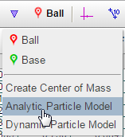
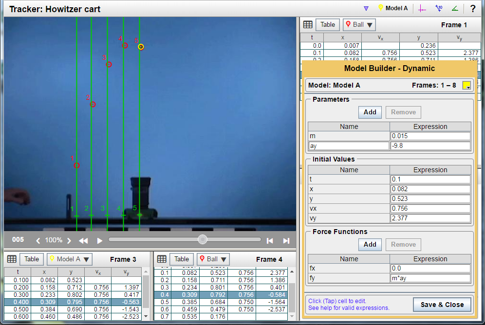

Overview
In addition to a Center of Mass particle, you can create two types of mathematical models with Tracker: a Dynamic particle model and
an Analytic particle model. Both are described in detail below. The idea in either case, though, is to create a mathematically-defined
measurement that shows up as a particle measurement in your video frame and can be analyzed in graphs and plots.
Usually, the point of a modeled particle is to define a mathematical rule that enables you to closely match an actual particle measurement on your video. If your modelled particle tracks your measured particle closely (nearly the same location in every video frame), you’ve created an accurate mathematical model of that particle’s behavior. This kind of detailed analysis and modeling is extremely useful in engineering design and analysis of mechanical systems and interactions. (Like crash test videos.)
A Dynamic particle model is based on your knowledge of dynamics (force relationships).
An Analytic particle model is based on your knowledge of kinematics (motion analysis).
Getting started
To begin developing either type of model, select it from the Measurement selector pull-down menu:

Using parameters
To make it simpler to focus on one variable at a time as you refine your models, you can also define “parameters” whose values you
can change individually. For instance, if you think you’re dealing with a quadratic relationship between y position and time t, you can
express that relationship in this mathematical form:
y = At2 + Bt + C
So, in the modeling process, you might:
You can give your parameters names containing multiple characters. In physics, for instance, the initial velocity in the x direction is generally written in equations as vx0 (v with x and zero as subscripts.) To keep this parameter obvious for yourself and others, you can define this parameter and call it vx0. That consistent labeling makes setting up equations and debugging your models easier and more understandable.
Parameters must begin with a letter, but after that, they can contain numerals as well. No other symbols.
See below for detailed instructions on Dynamic particle models and Analytic particle models.
A Dynamic particle model is based on your knowledge of dynamics (force relationships).
For most physics-type applications, a Tracker dynamic model is a lot easier to design, build, and refine than an analytic model. A lot of the mathematics behind positioning a particle at a point in time in the video is based on a set of initial values that you’d expect to define for any mechanics problem. Input boxes for all of these quantities are neatly set up for you in the Model Builder Dynamic dialog:
In the image below, notice the table directly above the orange Model Builder dialog. It displays five of these key variables for the Ball particle. Also notice that we don’t have information on velocities until t = 0.1 s. So, in order to start with known values, we decide to set the initial time for our model in the dialog box to be t = 0.1 s.
Completing our model definition:
You can see the success of this model in the image below. The model ball (yellow) matches the position of the measured ball (red) very well throughout its motion in the video display. Also, look at the data in the two tables below the video. Measurements for the Model (left table) and the Ball (right table) are very close to each other from time t = 0.1 s through 0.6 s.

An Analytic particle model is based on your knowledge of kinematics (motion analysis).
This type of model is based on recording or defining the following for a “particle”:
To simplify the expressions and simplify changing quantities in the model, you’ll typically want to define parameters for your model, as described above in Model basics. (That way you can avoid typing the same number in several places every time you want to adjust values.)
For most “mechanics” problems, you can define the relationships for x and y position in the following way, assuming the initial time, t0, is 0.0 seconds and assuming you also know the initial positions (x0 and y0) and the initial velocities (vx0 and vy0) of the particle at that time:
y = y0 + vy0t + ½ayt2
x = x0 + vx0t + ½axt2
Complex, but workable if you set up parameters for all these things. Unfortunately, for many Tracker models (like the Dynamic example shown above) you don’t know all these parameter values at time t = 0.0 s. Then, your best bet is to start at some initial time t0 other than zero. That makes your equations even more complex:
y = y0 + vy0(t - t0) + ½ay(t - t0)2
x = x0 + vx0(t - t0) + ½ax(t - t0)2
Making this long story short: Developing an analytic model is generally harder (and more error-prone) than developing a dynamic model. Compare the position equations above with the simple force equations we previously developed for our Dynamic model example:
fy = m*ay
fx = 0
So, the big question is, “When would you use an analytic model?”
The most common answer: “When you (or your teachers) want you to exercise your skill and show your mastery of kinematics!”